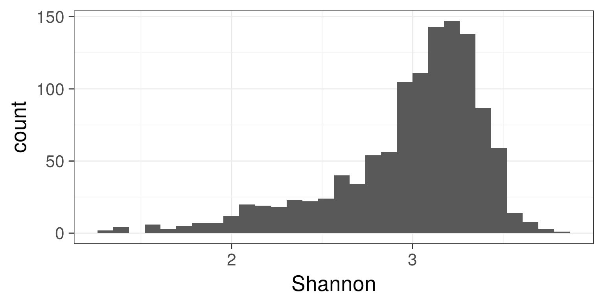
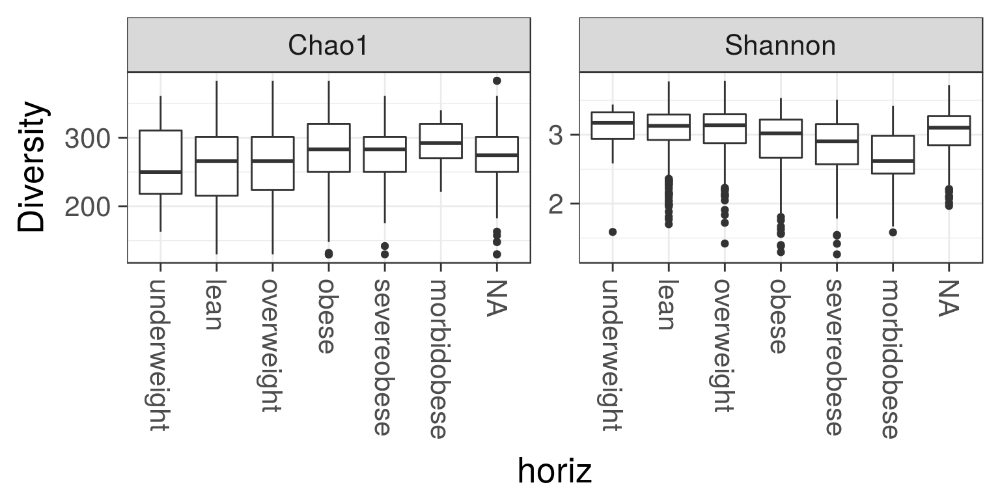
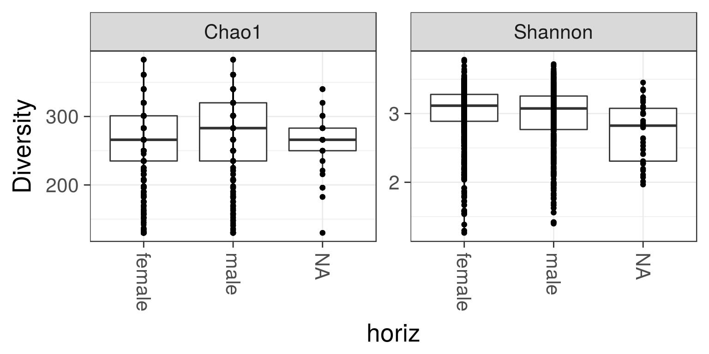
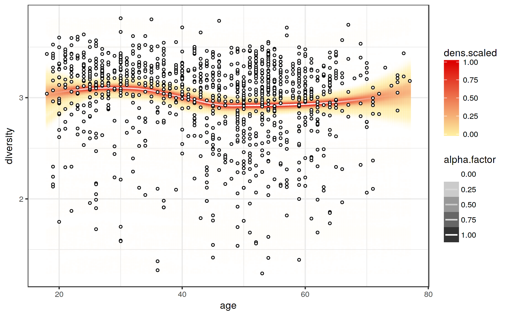

See a separate page on Beta diversity.
Load example data:
library(microbiome)
data(atlas1006)
pseq <- atlas1006# Estimate diversity (table with various diversity measures):
diversity <- microbiome::diversity(pseq, detection = 0)
# Show beginning of the diversity table
head(kable(diversity))## [1] " Observed Chao1 se.chao1 ACE se.ACE Shannon Simpson InvSimpson Fisher Evenness"
## [2] "------------ --------- --------- ------------ --------- ----------- --------- ---------- ----------- --------- ----------"
## [3] "Sample.1 130 340.0000 94.2987236 187.4993 5.7593841 3.189726 0.9230387 12.993537 12.29785 0.6553063"
## [4] "Sample.2 130 320.0000 87.5785362 205.6407 5.7088622 3.396135 0.9397719 16.603545 11.93702 0.6977115"
## [5] "Sample.3 130 340.0000 94.2987236 265.3240 6.8856308 2.866104 0.8850959 8.702908 12.38015 0.5888204"
## [6] "Sample.4 130 301.0000 81.0278345 185.0672 5.7683376 3.058653 0.9066459 10.711903 11.85667 0.6283784"Show diversity:
library(ggplot2)
theme_set(theme_bw(20)) # Set bw color scheme
p <- ggplot(diversity, aes(x = Shannon)) + geom_histogram()
print(p)
Visualize diversity measures w.r.t. discrete variable (or check more generic group-wise comparison tools)
p <- plot_diversity(pseq, "bmi_group", measures = c("Chao1", "Shannon"), indicate.subjects = FALSE)
print(p)
To indicate time as discrete variable, order it as a factor. If a subject column is available in sample data the subjects will be indicated by lines across the groups
# Visualize diversities across groups
p <- plot_diversity(pseq, "gender", measures = c("Chao1", "Shannon"), indicate.subject = TRUE)
print(p)
Diversity vs. continuous variable:
library(dplyr)
pseq <- atlas1006
# Add diversity into sample metadata
sample_data(pseq)$diversity <- microbiome::diversity(pseq)$Shannon
# Visualize
p <- plot_regression(diversity ~ age, meta(pseq))
print(p)